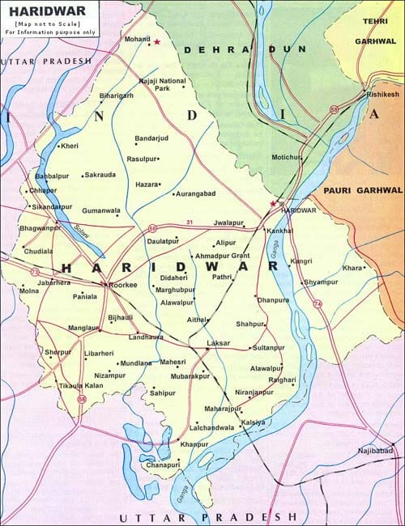

Handloom and Textiles – Haridwar

🧵 Product Description
Haridwar is home to a rich legacy of handloom and textile craftsmanship that dates back centuries. The handwoven fabrics produced here reflect the deep cultural heritage of Uttarakhand and are a symbol of the region’s traditional artistic excellence. These textiles are primarily made using natural fibers such as cotton and silk, and artisans often use organic dyes derived from plants, flowers, and roots. The products range from elegant sarees and kurtas to shawls, bedsheets, and home décor items. Each piece crafted in Haridwar is unique, bearing the mark of meticulous craftsmanship and age-old techniques passed down through generations.
The vibrant colors, traditional motifs, and soft textures of Haridwar’s textiles make them especially popular among urban consumers looking for sustainable fashion alternatives. The handloom products are not only eco-friendly but also support livelihoods of hundreds of weavers and artisans. Various government and non-governmental initiatives have helped revive this age-old tradition and bring Haridwar’s handloom work to national and international platforms. As the demand for handmade and sustainable clothing increases, Haridwar's textile industry is gaining renewed attention for its eco-conscious and ethically produced designs.
📍 Origin, Speciality & Cultural Significance
The origin of handloom weaving in Haridwar can be traced to the ancient period, where traditional cotton fabrics were woven by families for temple rituals and spiritual events. Haridwar, being one of the holiest cities in India, is a melting pot of spirituality and artistry. The designs in the textiles often draw inspiration from the Ganges River, lotus motifs, peacocks, and other nature-centric or mythological patterns. What makes these handloom products even more special is the emphasis on sustainability — artisans use spinning wheels, natural fibers, and age-old pit looms that reduce energy consumption.
📞 Contact & Purchase Info
For purchase and inquiries, connect with the “Haridwar Weavers’ Co-operative Society”. Visit popular shopping areas such as Bara Bazaar, Upper Road Market, or Kankhal Handloom Center in Haridwar to explore the variety of handloom products. Orders can also be placed online through their official website at https://awgpstore.com/category?id=IG0081.
🗺️ Haridwar District Map

🎉 Fun Facts & History
- Haridwar’s weaving heritage is deeply rooted in the city’s spiritual culture, with many textiles used in temple rituals and festivals.
- The city’s women-led weaving cooperatives have empowered numerous households and continue to uplift rural economies.
- Haridwar’s fabrics are increasingly finding space in international exhibitions and sustainable fashion runways.
- Each design often tells a story, with symbols from the Ganga river, traditional chants, or local wildlife represented in patterns.
- UNESCO has acknowledged some weaving clusters in Uttarakhand as part of India’s intangible cultural heritage.